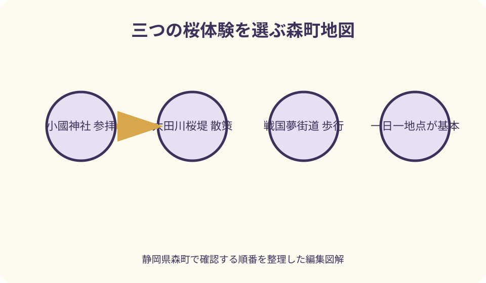
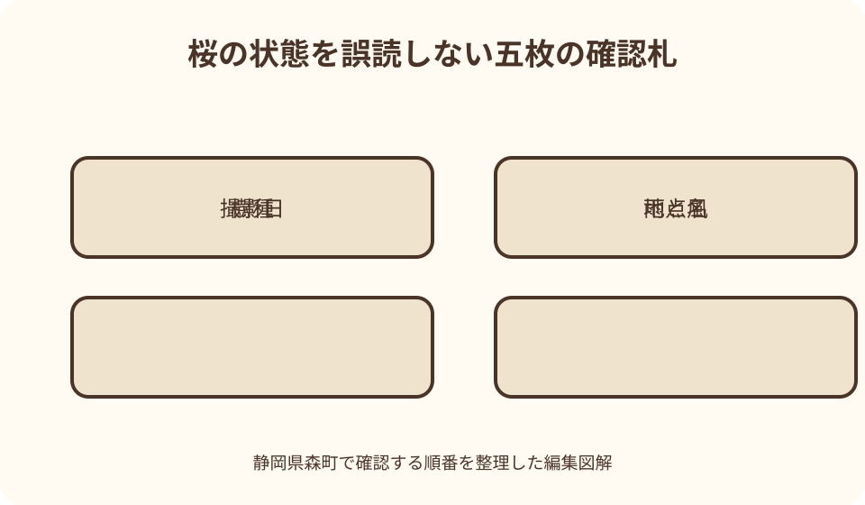

桜・花見・開花情報｜最終確認 2026-08-10
静岡県森町の桜名所と開花確認｜小國神社・太田川桜堤・戦国夢街道の選び方
森町の桜は一か所にまとまっていません。参拝と境内の花を味わう小國神社、川沿いの並木を歩く太田川桜堤、山あいを歩く戦国夢街道では、景色だけでなく移動、足元、滞在方法が違います。同じ日でも樹種や地点ごとに状態が異なるため、町公式の当年写真を地点単位で見てから行先を選びます。

編集イラスト森町の桜は三つの体験から選ぶ
町公式の当年開花情報は、太田川桜堤、小國神社、戦国夢街道ハイキングコースを代表的な確認地点として扱っています。ただし三地点は同じ公園の区画ではなく、地区も過ごし方も異なります。
太田川桜堤は、川と堤防に沿う桜並木を横方向へ眺める場所です。一本の木を目的にするより、歩くにつれて続く花の帯、川面、遠景を楽しみたい人に向きます。
小國神社は、参拝が場所の中心にあります。舞殿付近、駐車場付近、枝垂れ桜など境内でも確認地点が分かれ、同じ日にすべて同じ状態になるとは限りません。
戦国夢街道は、ハイキングコースの入口付近や大久保八幡神社の山桜などが町の更新対象になっています。平地の花見会場としてではなく、山里を歩く準備を伴う候補です。
初訪問なら三地点を一日で制覇しようとせず、桜堤の散策、神社参拝、ハイキングのどれをしたいか先に決めます。満開の地点数ではなく、同行者が無理なく過ごせる一体験を選びます。
開花状況は撮影日・地点・樹種で読む
森町公式の開花ページには、更新日とは別に写真の撮影日が示されます。画面上部の更新日だけを見ず、行きたい地点の写真がいつ撮られたものかを確認します。
表示が満開でも、数日後の訪問を保証するものではありません。暖かさ、雨、風により進行するため、写真は撮影時点の観測記録として読み、予報と経過日数を重ねます。
小國神社の過去の当年記録では、枝垂れ桜、舞殿横、駐車場横が異なる状態として報告されています。『小國神社が満開』という一文へ縮めず、見たい場所の記述まで読みます。
戦国夢街道でも、山桜と入口付近のソメイヨシノは同一の時計で進みません。樹種名と撮影場所が記載されていれば、写真の背景も照合して目的地を取り違えないようにします。
開花ページの更新終了表示も重要です。今季の追跡が終わった後は、新しい写真が追加されない可能性があります。その時点の状態と天候から判断し、次の更新を待ち続けません。
小國神社 参拝と複数地点の桜
小國神社を選ぶ人は、最初に神社公式の桜カテゴリと交通案内を見ます。町の開花写真で状態を知り、神社の案内で境内の催し、駐車場の利用条件、参拝上の変更を確認する役割分担です。
境内では参拝動線を優先します。桜の枝を背景に撮るために参道中央で立ち止まる、舞殿や社殿への流れを横切る、立入を示す境界を越える行動は避けます。
枝垂れ桜とソメイヨシノの両方を目当てにすると、一方が盛りでも他方が進んでいることがあります。直前写真を見て主役を一つ決め、もう一方は状態が合えば見る程度にします。
神社公式の駐車場案内には複数区画と利用上の注意があります。掲載時点も確認し、繁忙期や催しで利用できない区画がある可能性を前提に、現地誘導へ従います。
ことまち横丁など門前で休む場合も、桜の滞在とは時間を分けます。店の営業、待ち列、駐車位置への戻りを考え、参拝後に残った時間から選びます。
公共交通を使うなら、通常期の経路だけでなく訪問日の便を交通事業者公式で確認します。桜の撮影を続けて帰りの選択肢を失わないよう、境内を出る時刻を先に決めます。
太田川桜堤 川沿いを歩く花見
太田川桜堤は向天方地区の川沿いに続く景観として町公式に紹介されています。入口が一つの有料園地ではないため、地名だけをナビに入れて到着したつもりにならず、観光資料で散策する区間を決めます。
堤防沿いでは歩行者だけの空間だと決めつけません。道路や生活動線と接する場所では、車、自転車、地域の通行を妨げず、桜を見上げたまま車道へ出ないようにします。
長く歩ける景観でも、往復の体力を残します。片道で写真を撮り続け、帰りに疲れる構成を避け、折返し地点、休む場所、トイレの位置を出発前に確認します。
川辺の風は体感温度と花の揺れに影響します。薄着の花見だけでなく、風を防ぐ上着、帽子を飛ばさない工夫、カメラのストラップを用意します。
桜並木の下で飲食できるように見えても、宴会、火気、場所取り、ごみ捨ての可否は外観から判断できません。当年の掲示と管理者案内を確認し、許可が読めなければ歩いて鑑賞する計画にします。
戦国夢街道 山里の桜と歩行条件
戦国夢街道は桜だけを一枚撮って戻る場所ではなく、ハイキングコースとしての性格があります。町公式の観光資料でコース、入口、距離感を把握し、普段歩かない人は短い範囲にします。
大久保八幡神社の山桜と、コース入口付近のソメイヨシノは、町の開花記録でも別項目として扱われます。一方が終盤でも他方の情報を確認する価値があります。
靴は桜色の写真映えより、傾斜と湿った路面への対応を優先します。雨後は土や落葉が滑りやすくなる可能性があるため、底の浅い街歩き靴で無理に奥へ進みません。
山里では携帯電話の状態、飲料、日没、同行者の体力を確認します。短時間のつもりでも撮影で歩みが遅くなるので、到着時刻ではなく戻り始める時刻を決めます。
民家、農地、神社周辺は観光専用の背景ではありません。指定外の空き地を駐車場として使わず、枝や畦へ入らず、地域の人と車が通れる幅を残します。
三地点の位置と移動を一枚で判断する
小國神社は一宮、太田川桜堤は向天方、戦国夢街道は北側の山里というように、町内で方向が分かれます。地図の縮尺を小さくして三地点を同時表示し、別地区だと理解してから予定を組みます。
車なら、地点間の所要時間だけでなく、駐車待ち、駐車区画から桜までの徒歩、出庫時の混雑を足します。一日に二地点を結ぶ場合でも、第二地点は省略可能にします。
公共交通では、遠州森駅からすべての桜へ同じ便で行けるわけではありません。神社方面、町なかから桜堤方面、山間部への移動を個別に調べ、帰路まで成立しない場所は徒歩だけで代用しません。
タクシーを使うなら、駅前に常に車が待つ想定を置かず、往路、迎車場所、復路の配車を事業者へ確認します。山道や混雑時は到着予測も変わります。
二地点の状態が同程度なら、開花率ではなく移動の単純さで選びます。幼児や高齢者がいる日は小さな歩行範囲、歩くことが目的の日はコース型というように体験へ合わせます。

駐車と公共交通を開花情報から切り離す
開花ページに住所があっても、その地点に来訪者用駐車場が保証されるわけではありません。駐車の根拠は施設・管理者の交通案内または当年の臨時案内で確認します。
路上で同乗者だけを降ろす行為も、安全とは限りません。後続車、歩行者、交差点、私有地出入口を塞ぐ可能性があるため、指定された乗降や駐車方法を使います。
小國神社は神社公式の駐車場地図を確認できますが、区画の開設条件や工事情報は更新されます。過去に停めた場所へ向かうのではなく、当日の看板と誘導員を優先します。
桜堤や戦国夢街道では、観光マップの地点印と駐車地点を同じ記号と解釈しません。駐車案内が見つからなければ、森町の観光窓口へ事前に問い合せ、現地で空地を探す計画をやめます。
公共交通は乗る便だけでなく、降りた場所からの歩道、帰りの停留所、運行日を確認します。帰り便に余裕がない日は、一輪を追って行動範囲を広げません。
自転車で巡る場合も、桜堤の通路へ自由に乗り入れられるとは考えません。駐輪場所、歩行者が多い区間、坂道、雨後の制動を確認し、混雑区間では降りて押すなど現地の表示に合わせます。
宴会・飲食・撮影は現地ルールを読む
花見という言葉から、シートを広げた宴会を当然と考えないことが重要です。神社境内、堤防、ハイキングコースは管理目的が異なり、飲酒、火気、音響、長時間の場所取りの扱いも同じとは限りません。
公式ページに宴会可と明記されていない場合は、立ったまままたは歩きながらではなく、指定休憩場所の有無を確認します。分からなければ飲食店や許可された休憩場所へ移動します。
持参した飲食物の容器とごみは持ち帰れる量にします。ごみ箱があると決めつけず、汁物や割れ物を避け、風で包装が飛ばないよう袋を閉じます。
撮影では、通路を塞ぐ三脚、ドローン、商用撮影、モデルを伴う長時間撮影を通常の記念写真と同じ扱いにしません。管理者の許可や届出が必要かを事前に確認します。
桜の枝を引き寄せる、花を摘む、根元へ機材を置く行為はしません。望遠や構図で距離を調整し、他の参拝者や歩行者が写る場合は個人が特定されない配慮をします。
雨・強風・混雑で変える当日の計画
小雨なら花の色や水滴を楽しめても、傘で視界と通路幅が狭くなります。堤防や坂道では写真より足元を優先し、同行者同士で横に広がらず一列になります。
強風の日は落花が進むだけでなく、枝の揺れ、飛来物、川沿いや山道の体感に注意が必要です。気象情報と現地の注意表示を見て、無理なら車窓から探すのではなく訪問を変更します。
雨後の戦国夢街道は、平地の舗装路と同じ条件ではありません。入口で滑りやすさを感じたら、予定距離を短縮し、別の桜へ急いで移動するより町なかの屋内候補へ切り替えます。
混雑時は満開の木の正面へ入ることを目標にしません。少し離れた景観、参道の外からの眺め、時間をずらした再訪という代案を使い、路上待機や無断駐車を避けます。
花が予想より進んでいたら、残る花を探して町内を走り回らず、参拝、町並み、茶、菓子など天候と開花に左右されにくい目的へ移ります。桜が少ない日も森町を失敗にしない設計です。
同行者とは、到着後に別行動する場合の集合地点と時刻を決めます。携帯電話だけに頼らず、駐車区画の番号や停留所名を共有すれば、人混みで通信しづらい場面でも帰路へ戻れます。
良い点
森町では川沿い、神社、山里という異なる風景の桜を選べます。同じ花でも背景と歩き方が変わるため、家族の散策、参拝、ハイキング、写真という目的に合わせやすいです。
町公式が複数地点を同じ当年ページで撮影し、状態を言葉と写真で示している点は実用的です。町内の差を同じ確認日に近い条件で比較できます。
小國神社は神社自身も桜情報を発信しているため、町全体の比較と境内の詳しい確認を重ねられます。駐車場など施設側の案内へ直接戻れるのも利点です。
桜が主目的でも、参拝、川辺の散策、山里の歩行が一緒になります。満開の一瞬だけに価値を置かず、春の森町を異なる速度で味わえます。

注文したい点
開花情報から各地点の公式地図、駐車、公共交通へ直接移れるリンクがそろうと、初めての人が住所だけで駐車場所を推測せずに済みます。
写真には撮影日だけでなく、撮影位置を地図上の番号で示してほしいところです。小國神社内やハイキングコース内の複数地点を、名称に不慣れな訪問者も区別できます。
桜堤について、飲食、シート、火気、三脚、ペット、ごみの扱いを管理者が一覧にすると安心です。禁止事項だけでなく、短く休める場所も示されると滞在を設計しやすくなります。
公共交通での訪問例は、便の数字を固定せず、最寄り駅・停留所と運行事業者へのリンクを地点別に示す形が望まれます。更新先が分かれば旅行者が訪問日を自分で確認できます。
更新終了後も、最終撮影日の天候と状態、次の春に見るべきページへの入口が残ると、翌年の下調べで古い写真を当年情報と誤認しにくくなります。
代案・結論
開花が早いまたは遅い年は、旅行日を花へ無理に合わせられないことがあります。その場合は三地点の最新写真を比較し、最も状態が良い場所ではなく、移動が確実な場所を一つ選びます。
駐車場が混んでいたら、周辺道路で空きを待たず、事前に決めた町なかの候補へ移ります。別の桜地点へ即興で向かうと、そこでも駐車条件を確認できていません。
雨天なら小國神社で短い参拝、強風なら屋内の食事や買い物、山道が湿っていればハイキング中止というように、危険要因と代案を一対一で決めます。
結論は、町公式の撮影日付き開花情報で一地点を選び、管理者の交通と利用ルールを重ね、当日の空と足元で実施範囲を縮めることです。見頃の固定日を覚える必要はありません。
大石の視点
私が桜の記事で伝えたいのは、満開予想を当てる技術より、外れても困らない選び方です。自然を予約商品のように扱わず、撮影時点の事実と自分の訪問日を分けて考えます。
小國神社、太田川桜堤、戦国夢街道を一括して『森町の桜』と呼ぶと、移動と現地ルールが消えてしまいます。場所ごとの違いを具体的に書くことが、遠方から来る人への最低限の親切です。
写真を撮る側は、枝の美しさだけでなく、その木の下を通る人、祈る人、暮らす人まで見る必要があります。良い構図を諦める判断も、地域の桜を大切にする行動です。
桜が散り始めていても、川面の花びら、若葉、静かな参道には別の表情があります。満開の札だけを成功条件にしなければ、混雑を追わず、自分の速度で春を見られます。
出発直前には本稿の見頃説明ではなく、町と各施設の最新ページを開いてください。画面の写真が数日前なら、その後の雨風も確認し、行かない選択まで含めて完成した花見です。
公式情報・確認先
掲載内容は次の一次情報を基礎に整理しました。営業、料金、催し、交通は変わるため、出発前または手続き前にリンク先で最新情報を確認してください。
- 桜の開花状況について（静岡県森町、2026-08-10確認）
- 森町の花めぐり動画公開（静岡県森町、2026-08-10確認）
- 観光・文化（静岡県森町、2026-08-10確認）
- 四季のイベント（静岡県森町観光協会、2026-08-10確認）
- 桜のお知らせ（遠江国一宮 小國神社、2026-08-10確認）
- 交通案内（遠江国一宮 小國神社、2026-08-10確認）